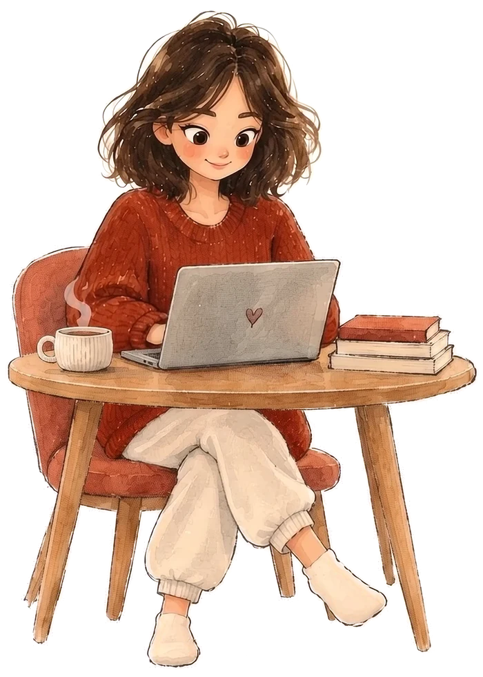
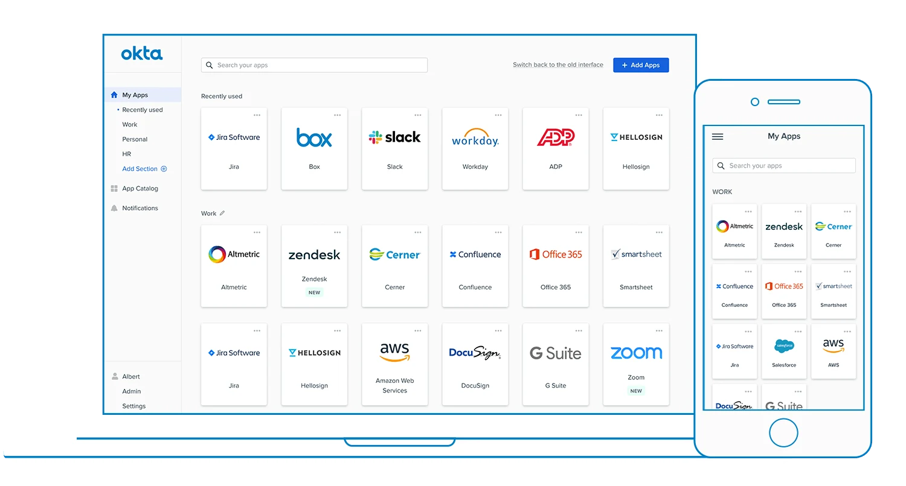
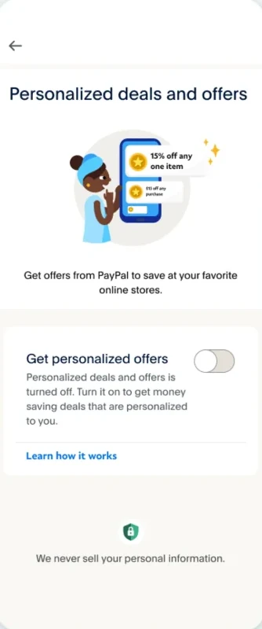
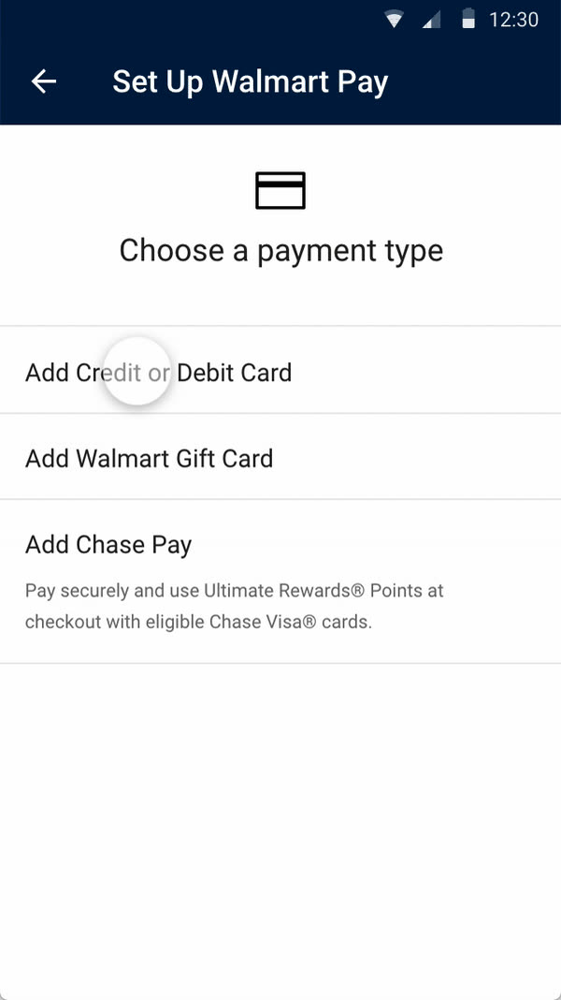
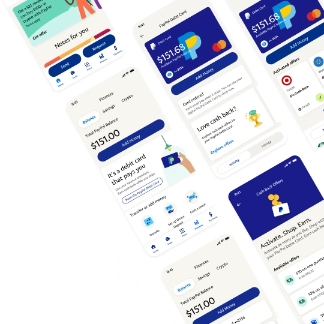

Bangalore,IN · 21:48:06
Hi, I’m Anupama, a Staff Product Designer. I ship, I nudge, I craft, from systems and strategy to the last stubborn pixel.

Selected work
(Project cards continue here.)
A: the lid zooms out to a big screen in front of the page, page dimmed. Esc or × shrinks it back into the lid.

(Project cards continue here.)




